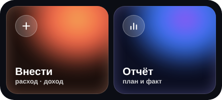

Виджет «Бюджет»

Слева «Внести», справа «Отчёт». Перед установкой виджета откройте приложение в браузере и введите код доступа. Это делается один раз на каждом телефоне.
iPhone через Scriptable
- Установите бесплатное приложение Scriptable из App Store.
- Нажмите «Скопировать код виджета» ниже.
- Откройте Scriptable, нажмите «+» справа вверху и вставьте код. Нажмите на заголовок «Untitled Script» и назовите скрипт Бюджет, затем Done. Чтобы проверить, нажмите ▶: появится виджет.
- На рабочем столе удерживайте палец на пустом месте → «Править» → «Добавить виджет» (или «+» слева вверху) → найдите Scriptable → выберите средний размер → «Добавить виджет».
- Нажмите на появившийся виджет, пока значки трясутся, и в поле Script выберите Бюджет. Нажмите за пределами окна.
Подключайте приложение именно в Safari: виджет открывает ссылки там. Код виджета можно и просто открыть.
Android своё мини-приложение
- Нажмите «Скачать виджет» ниже и откройте скачанный файл budget-widget.apk.
- Телефон попросит разрешить установку из Chrome: «Настройки» → «Разрешить из этого источника», затем вернитесь и нажмите «Установить». Если Play Защита предупредит о неизвестном приложении, выберите «Всё равно установить».
- На рабочем столе удерживайте палец на пустом месте → «Виджеты» → найдите Бюджет → перетащите виджет 4×2 на экран.
Виджет только открывает приложение и не просит никаких разрешений. На рабочем столе появится и иконка «Бюджет»: она сразу открывает экран «Внести». Если в Chrome установить приложение через меню «⋮ → Добавить на гл. экран», виджет будет открывать его без адресной строки.